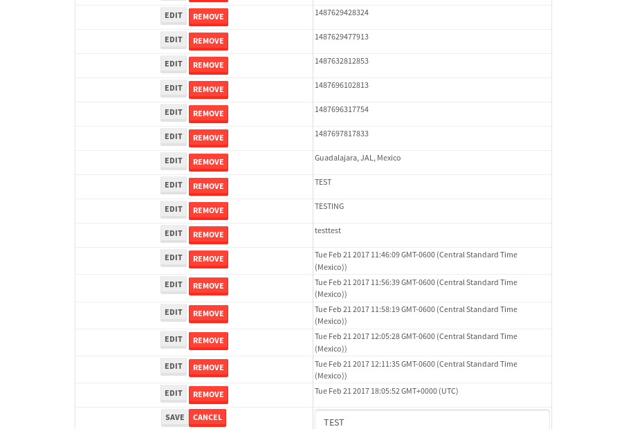

tbColumn.Grid Sorting - 26.581sTests: 5Skipped: 0Failures: 0 should sort data in ascending order then on descending order when sorting by Order Id column - 5.275sTests passed: 100.00%should order data in ascending order when click-sorting an unsorted text column - 5.164sTests passed: 100.00%should order data in descending order when click-sorting an ascending-sorted text column - 5.62sTests passed: 100.00%should order data in ascending order when click-sorting an unsorted date column - 5.185sTests passed: 100.00%should order data in descending order when click-sorting twice an unsorted date column - 5.336sTests passed: 100.00%
tbSingleForm.Form validations - 2.441sTests: 2Skipped: 0Failures: 0 should have an empty required field - 1.318sTests passed: 100.00%should not be able to click on save - 1.123sTests passed: 100.00%
Tubular Filters.tbColumnFilter - 113.319sTests: 12Skipped: 0Failures: 0 should cancel filtering when clicking outside filter-popover - 9.161sTests passed: 100.00%should disable Value text-input for "None" filter - 7.182sTests passed: 100.00%should disable apply button for "None" filter - 6.648sTests passed: 100.00%should decorate popover button when showing data is being filtered for its column - 12.87sTests passed: 100.00%should correctly filter data for the "Equals" filtering option - 8.935sTests passed: 100.00%should correctly filter data for the "Not Equals" filtering option - 9.082sTests passed: 100.00%should correctly filter data for the "Contains" filtering option - 9.357sTests passed: 100.00%should correctly filter data for the "Not Contains" filtering option - 9.817sTests passed: 100.00%should correctly filter data for the "Starts With" filtering option - 7.402sTests passed: 100.00%should correctly filter data for the "Not Starts With" filtering option - 7.513sTests passed: 100.00%should correctly filter data for the "Ends With" filtering option - 6.886sTests passed: 100.00%should correctly filter data for the "Not Ends With" filtering option - 7.344sTests passed: 100.00%
Tubular Filters.tbColumnDateTimeFilter - 138.832sTests: 12Skipped: 0Failures: 0 should cancel filtering when clicking outside filter-popover - 8.302sTests passed: 100.00%should disable Value text-input for "None" filter - 7.001sTests passed: 100.00%should disable apply button for "None" filter - 6.925sTests passed: 100.00%should clear filtering when clicking on Clean button - 17.427sTests passed: 100.00%should decorate popover button when showing data is being filtered for its column - 11.665sTests passed: 100.00%should correctly filter data for the "Equals" filtering option - 7.128sTests passed: 100.00%should correctly filter data for the "Not Equals" filtering option - 8.139sTests passed: 100.00%should correctly filter data for the "Between" filtering option - 12.379sTests passed: 100.00%should correctly filter data for the "Greater-or-equal" filtering option - 12.387sTests passed: 100.00%should corretlly filter data for the "Greater" filtering option - 12.444sTests passed: 100.00%should correctly filter data for the "Less-or-equal" filtering option - 12.056sTests passed: 100.00%should correctly filter data for the "Less" filtering option - 12.277sTests passed: 100.00%
Tubular Filters.tbColumnOptionsFilter - 83.574sTests: 3Skipped: 0Failures: 0 should cancel filtering when clicking outside filter-popover - 9.528sTests passed: 100.00%should decorate popover button when showing data is being filtered for its column - 12.288sTests passed: 100.00%should filter column-elements in accordance to the selected filter when selecting a single option - 50.782sTests passed: 100.00%
Tubular Filters.tbTextSearch - 48.881sTests: 5Skipped: 0Failures: 0 min-chars is not set - 1.392sTests passed: 100.00%should filter data in searchable-column customer name to matching inputted text, starting from 3 characters - 6.874sTests passed: 100.00%should filter data in searchable-column shipper city to matching inputted text, starting from 3 characters - 12.026sTests passed: 100.00%should show clear button when there is inputted text only - 6.626sTests passed: 100.00%should clear filtering when clicking clear button - 16.456sTests passed: 100.00%
tbForm related components.tbCheckboxField - 8.525sTests: 2Skipped: 0Failures: 0 should save changes on "SAVE" - 3.3sTests passed: 100.00%should discard changes on "CANCEL" - 2.459sTests passed: 100.00%
tbForm related components.tbDropDownEditor - 12.29sTests: 5Skipped: 0Failures: 0 should set initial input value to the value of "value" attribute when defined - 1.703sTests passed: 100.00%should show the component name value in a label field when "showLabel" attribute is true - 1.845sTests passed: 100.00%should show a help field equal to this attribute, is present - 1.663sTests passed: 100.00%should submit modifications to item/server when clicking form "Save" - 4.183sTests passed: 100.00%should NOT submit modifications to item/server when clicking form "Cancel" - 2.288sTests passed: 100.00%
tbForm related components.tbTextArea - 17.077sTests: 7Skipped: 0Failures: 0 should set initial input value to the value of "value" attribute when defined - 1.845sTests passed: 100.00%should be invalidated when the number of chars is not in the range of "min" and "max" attributes - 2.863sTests passed: 100.00%should show the component name value in a label field when "showLabel" attribute is true - 1.713sTests passed: 100.00%should show a help field equal to this attribute, is present - 1.926sTests passed: 100.00%should require the field when the attribute "required" is true - 2.155sTests passed: 100.00%should submit modifications to item/server when clicking form "Save" - 3.192sTests passed: 100.00%should NOT submit modifications to item/server when clicking form "Cancel" - 2.616sTests passed: 100.00%
tbForm related components.tbDateEditor - 14.878sTests: 6Skipped: 0Failures: 0 should set initial date value to the value of "value" attribute when defined - 2.378sTests passed: 100.00%should be invalidated when the date is not in the range of "min" and "max" attributes - 2.518sTests passed: 100.00%should show the component name value in a label field when "showLabel" attribute is true - 1.825sTests passed: 100.00%should show a help field equal to this attribute, is present - 1.858sTests passed: 100.00%should submit modifications to item/server when clicking form "Save" - 2.455sTests passed: 100.00%should NOT submit modifications to item/server when clicking form "Cancel" - 3.017sTests passed: 100.00%
tbForm related components.tbTypeaheadEditor - 18.096sTests: 7Skipped: 0Failures: 0 should show an options list when there is an API-info/component entered-data - 2.181sTests passed: 100.00%should select the option clicked - 3.095sTests passed: 100.00%should show a "delete" button when an option/match is selected, and delete the option if button is clicked - 2.391sTests passed: 100.00%should show a label value equal to the component name when "showLabel" attribue is true - 1.704sTests passed: 100.00%should require a value when "require" attribute is true - 2.458sTests passed: 100.00%should submit modifications to item/server when clicking form "Save" - 3.387sTests passed: 100.00%should NOT submit modifications to item/server when clicking form "Cancel" - 2.176sTests passed: 100.00%
tbForm related components.tbSimpleEditor - 21.047sTests: 9Skipped: 0Failures: 0 should set initial input value to the value of "value" attribute when defined - 2.138sTests passed: 100.00%should be invalidated when the number of chars is not in the range of "min" and "max" attributes - 2.674sTests passed: 100.00%should show the component name value in a label field when "showLabel" attribute is true - 2.014sTests passed: 100.00%should set input placeholder to the value of "placeholder" attribute - 2.893sTests passed: 100.00%should validate the control using the "regex" attribute, if present - 1.765sTests passed: 100.00%should show a help field equal to this attribute, is present - 1.879sTests passed: 100.00%should require the field when the attribute "required" is true - 2.108sTests passed: 100.00%should submit modifications to item/server when clicking form "Save" - 2.94sTests passed: 100.00%should NOT submit modifications to item/server when clicking form "Cancel" - 1.994sTests passed: 100.00%
tbForm related components.tbNumericEditor - 16.836sTests: 7Skipped: 0Failures: 0 should set initial component value to the value of "value" attribute when defined - 1.958sTests passed: 100.00%should be invalidated when the entered number is not in the range of "min" and "max" attributes - 2.258sTests passed: 100.00%should show the component name value in a label field when "showLabel" attribute is true - 1.818sTests passed: 100.00%should show a help field equal to this attribute, is present - 1.866sTests passed: 100.00%should require the field when the attribute "required" is true - 2.373sTests passed: 100.00%should submit modifications to item/server when clicking form "Save" - 3.25sTests passed: 100.00%should NOT submit modifications to item/server when clicking form "Cancel" - 2.382sTests passed: 100.00%
tbForm Connection Error NoModelKey - 3.119sTests: 1Skipped: 0Failures: 0 tbForm connection error functionality - 0.785sTests passed: 100.00%
tbForm Connection Error NoServerUrl - 2.403sTests: 1Skipped: 0Failures: 0 tbForm connection error functionality - 0.477sTests passed: 100.00%
tbGridComponents - 51.787sTests: 6Skipped: 0Failures: 2 should add item with newRow method - 6.45sTests passed: 100.00%should add item with newRow method and cancel action - 1.371sTests passed: 100.00%should update item with tbSaveButton - 19.76sExpected '' to be 'TEST'.✗Tests passed: 0.00%should NOT update item on cancel Update action - 0.746sFailed: ElementNotVisibleError✗Tests passed: 0.00%should remove item with tbRemoveButton - 21.045sTests passed: 100.00%should NOT remove item on cancel Remove action - 0.94sTests passed: 100.00%
tbGridPager.navigation buttons - 9.811sTests: 1Skipped: 0Failures: 0 should perform no action when clicking on the numbered navigation button corresponding to the current-showing results page - 1.597sTests passed: 100.00%
tbGridPager.navigation buttons.first/non-last results page related functionallity - 3.874sTests: 2Skipped: 0Failures: 0 should disable "first" and "previous" navigation buttons when in first results page - 1.787sTests passed: 100.00%should enable "last" and "next" navigation buttons when in a results page other than last - 2.087sTests passed: 100.00%
tbGridPager.navigation buttons.last/non-first results page related functionallity - 4.339sTests: 2Skipped: 0Failures: 0 should disable "last" and "next" navigation buttons when in last results page - 2.103sTests passed: 100.00%should enable "first" and "previous" navigation buttons when in a results page other than first - 2.236sTests passed: 100.00%
tbGridPager.page navigation - 7.41sTests: 5Skipped: 0Failures: 0 should go to next results page when clicking on next navigation button - 1.586sTests passed: 100.00%should go to previous results page when clicking on previous navigation button - 1.809sTests passed: 100.00%should go to last results page when clicking on last navigation button - 1.485sTests passed: 100.00%should go to first results page when clicking on first navigation button - 1.306sTests passed: 100.00%should go to corresponding results page when clicking on a numbered navigation button - 1.223sTests passed: 100.00%
tbGridPagerInfo - 4.473sTests: 2Skipped: 0Failures: 0 should show text in accordance to numbered of filter rows and current results-page - 1.38sTests passed: 100.00%should show count in footer - 0.653sTests passed: 100.00%
tbHttp - 19.305sTests: 8Skipped: 1Failures: 0 should be authenticated - 4.089sTests passed: 100.00%retrieve data - 2.394sTests passed: 100.00%should not login bad credentials - 2.493sTests passed: 100.00%should have a refresh token - 2.484sTests passed: 100.00%should remove authentication - 2.606sTests passed: 100.00%get method-Is not authenticated - 2.722sTests passed: 100.00%post method-Is not authenticated - 2.515sTests passed: 100.00%should regenerate access token on post - 0.001s***Skipped***Tests passed: 0%
tbPageSizeSelctor - 11.271sTests: 4Skipped: 0Failures: 0 should filter up to 10 data rows per page when selecting a page size of "10" - 2.814sTests passed: 100.00%should filter up to 20 data rows per page when selecting a page size of "20" - 1.987sTests passed: 100.00%should filter up to 50 data rows per page when selecting a page size of "50" - 2.647sTests passed: 100.00%should filter up to 100 data rows per page when selecting a page size of "100" - 2.291sTests passed: 100.00%
tbRowSelectable - 10.663sTests: 2Skipped: 0Failures: 0 selected rows - 4.87sTests passed: 100.00%unselected rows - 3.868sTests passed: 100.00%
tbSingleForm - 18.675sTests: 8Skipped: 1Failures: 0 should load correct info - 0s***Skipped***Tests passed: 0%should change customer name - 2.423sTests passed: 100.00%should save it - 3.355sTests passed: 100.00%should clear the inputs - 2.346sTests passed: 100.00%should update - 2.726sTests passed: 100.00%should reset editor - 2.631sTests passed: 100.00%should not save if not Changes - 2.47sTests passed: 100.00%should not be able to click on save - 2.723sTests passed: 100.00%

{kind=link}